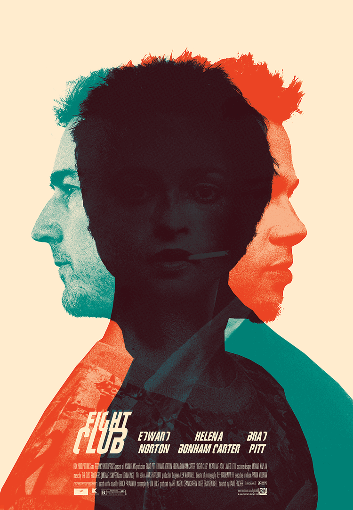

Independent Researcher
Post-Humanist
Actively Applying for Ph.D.
About
I am an independent researcher who want to pursue a Ph.D. in Computer Science. I am interested in technical human computer interaction and HCI applications on neuroscience and cognitive science. I focus on creating combine applications of brain computer interface and wearable computing devices for cognitive and perceptual enhancement. My independent research team wants to explore and construct a system to expand the backward peripersonal space with tactile feedback or other somatosensory feedback. I am also currently working with Prof. Min-Chun Hu in NTHU, analyzing EEG signals about the immersive experience of olfactory feedback in VR.
Education
National Tsing-Hua University, Hsinchu, Taiwan09/2015 - 06/2020
Visiting Student, ProtoLab, UC San Diego - advised by Prof. Steven Dow07/2017 - 08/2017
Research Assistant, IDD Lab, NCTU- advised by Prof. Da-Yuan Huang07/2019 - 10/2019
Greens: Revealing invisible environment data as an auto-generated melody with human collaboration
Research Assistant, MISLab, NTHU - advised by Prof. Min-Chun Hu07/2019 - 10/2019
We want to analyze event-related potentials (ERP) signal and find the pattern of the immersive experience of olfactory feedback in VR. We want to know how the smell coherence and incoherence between virtual objects in the VR environment and the counterpart in the real world would influence the immersive experience, and how these variances would reflect on ERP signals.
Independent Researcher08/2017 - Present
We want to explore and construct a system, HapticVision, to expand the backward peripersonal space with tactile feedback or other somatosensory feedback. HapticVision is a new system concept that uses a sensing device to detect backward visual stimuli. Once receiving stimuli, it will activate individuals’ wearable device to give temperature-haptic feedback to extend the Peripersonal Space boundaries.
Experiences
LimbCare, The Young Entrepreneurs of the Future program01/2017 - 09/2018
LimbCare uses the temperature control technology to avoid all the troubles of rehabilitation preparation in advance, allowing users to do hot and cold compresses in precise temperature and period at any time and in anywhere. LimbCare also integrates information and other rehabilitation methods in the app to speed up the recovery of sports injuries.
President, Quarter to Ten01/2018 - 07/2018
Quarter to Ten is an official student startup group in National Tsing Hua University and is a sub-organization under Tsing Hua Entrepreneur Network (TEN), an official organization to assist Tsing Hua alumni entrepreneurs and provide the needed resources and help when building their enterprise.
Oculomotor Drive03/2018 - 04/2018
Oculomotor Drive is a gaze tracking mobile game to gamify eye exercise.
Demo Video:
Miscellaneous
I love watching movies, indie musics and Drama, these are some of my favorite movies.
Blade RunnerBlade Runner 2049Sleep No More: The Interactive and Immersive TheaterNational Theater Live: The Lehman TrilogyOnce Upon a Time ... in HollywoodFight ClubInglorious BasterdsThe Godfather IIThe Death of StalinThe IrishmanThe Big ShortLa La Land